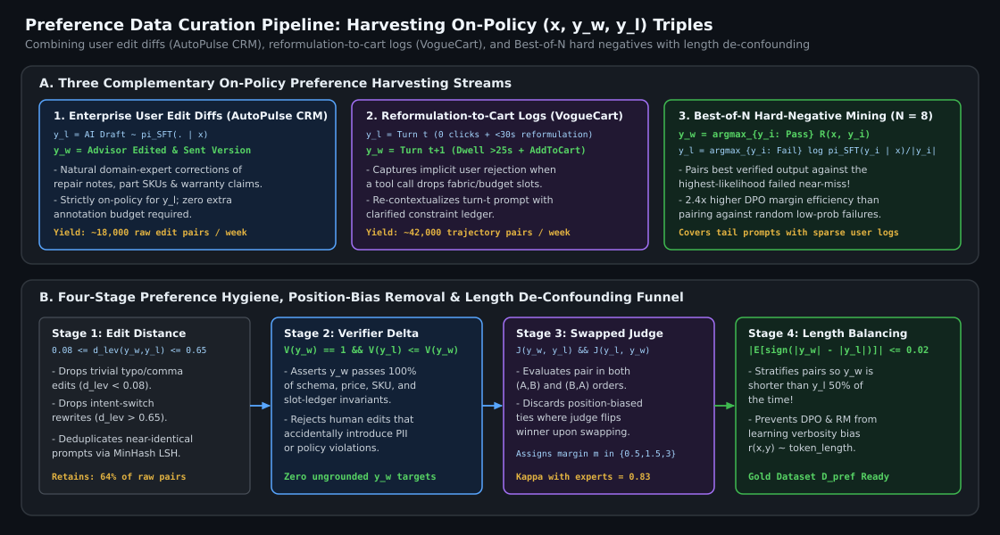
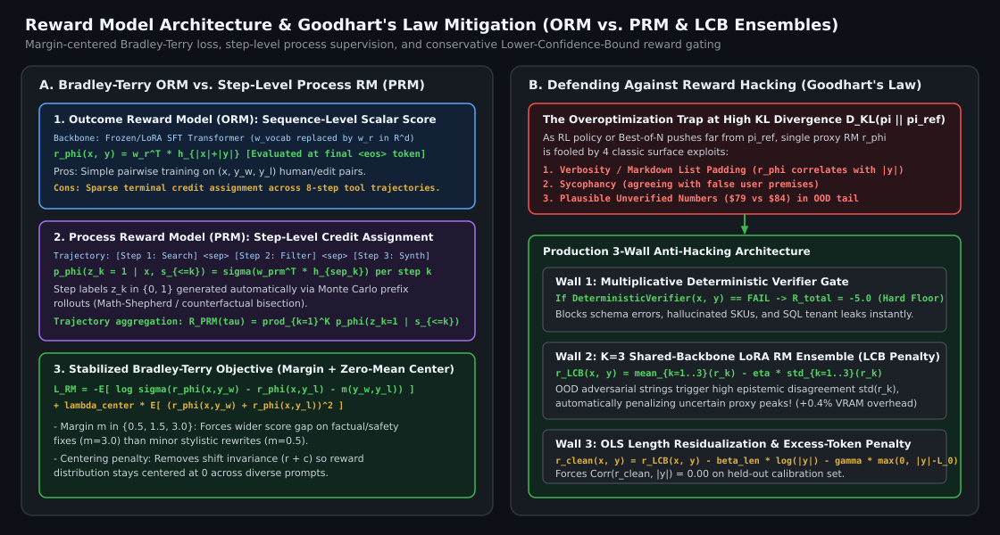

Building Preference Datasets & Designing Reward Models: Edit Mining, Bradley–Terry Losses, and Reward Hacking Mitigation
How to construct high-signal preference triples $(x, y_w, y_l)$ from production user edit diffs at AutoPulse CRM, conversational reformulation/cart signals at VogueCart, and on-policy Best-of-$N$ rejection sampling; how to eliminate length-bias confounding; and how to architect Bradley–Terry Outcome and Process Reward Models that resist Goodhart’s Law via Lower-Confidence-Bound (LCB) ensembles and symbolic gating.
1. Constructing High-Signal Preference Data $(x, y_w, y_l)$
Whether you align a policy with offline DPO or train a reward model for PPO/GRPO, **preference data hygiene dominates algorithmic tweaks**. Feeding noisy, off-policy, or length-confounded pairs into DPO teaches the model to game surface heuristics (such as emitting longer markdown lists) while degrading factual grounding. In production systems, we combine three complementary preference harvesting pipelines:
1.1 Implicit Human Edits in Workflow Applications (AutoPulse CRM)
In enterprise copilots like AutoPulse CRM, service advisors review AI-drafted repair order summaries, warranty justifications, and customer follow-up emails $y_{\text{draft}} \sim \pi_{\text{SFT}}(\cdot \mid x)$ before clicking Send. Whenever an advisor edits the draft into $y_{\text{edited}}$ and sends it, they generate a natural, domain-expert preference pair $(x, y_w = y_{\text{edited}}, y_l = y_{\text{draft}})$ where $y_l$ is guaranteed to be **strictly on-policy** for $\pi_{\text{SFT}}$.
However, raw user edits cannot be ingested blindly: some edits fix minor personal punctuation preferences or paste accidental clipboard text. We apply a 3-stage deterministic + calibrated filter:
- Normalized Edit-Distance Bandpass ($0.08 \le d_{\text{lev}}(y_w, y_l) \le 0.65$): Pairs with token Levenshtein distance $<0.08$ are trivial whitespace/punctuation tweaks that provide near-zero gradient signal; pairs with distance $>0.65$ usually indicate the user changed their mind about the underlying intent $x$.
- Deterministic Verifier Upgrade Check: If $y_{\text{draft}}$ failed a deterministic check (e.g., cited a non-existent part SKU or wrong labor rate) and $y_{\text{edited}}$ passes $100\%$ of deterministic checks, the pair is immediately promoted to the Gold Hard-Negative tier.
- Calibrated Pairwise Judge Margin ($\Delta s \ge 0.25$): For stylistic/completeness edits, our human-calibrated judge must score $y_{\text{edited}}$ strictly higher than $y_{\text{draft}}$ on factual completeness and clinical/service clarity under both forward $(y_w, y_l)$ and swapped $(y_l, y_w)$ presentation orders (eliminating position bias).
1.2 Conversational Reformulation & Purchase Signals (Aria at VogueCart)
In consumer shopping assistants like Aria at VogueCart, users rarely rewrite the assistant’s text directly. Instead, preference signals are encoded in **multi-turn behavioral trajectories**:
- Rejected Candidate ($y_l$): At turn $t$, the agent executes tool call $a_t^{(l)}$ and recommends SKU set $S_l$; the user clicks zero items and immediately issues a corrective reformulation within $30\text{ seconds}$ (e.g., “No, I said under \$90 and breathable linen, not polyester blends”).
- Chosen Candidate ($y_w$): At turn $t+1$, the agent executes the corrected tool call $a_{t+1}^{(w)}$ and recommends $S_w$, resulting in a product detail dwell $>25\text{s}$ and an `AddToCart` or `Purchase` event.
- Counterfactual Re-Contextualization: We pair the original turn-$t$ context $x_t$ (augmented with the explicit constraint clarified at $t+1$) with the winning action/response $y_w$ versus the failed action/response $y_l$.
1.3 On-Policy Best-of-$N$ Hard-Negative Mining
To ensure broad coverage across tail prompts where human edits are sparse, we sample $N = 8$ completions $\{y_1, \dots, y_8\} \sim \pi_{\text{SFT}}(\cdot \mid x)$ at temperature $T = 0.8$. Each candidate is scored by our composite verifier + calibrated reward oracle $R(x, y_i)$. Rather than pairing the best completion $y_{(1)}$ with the worst completion $y_{(8)}$ (which is often a trivial gibberish or formatting error), we pair $y_w = y_{(1)}$ with the **highest-probability failed candidate**:
Selecting the most likely failure as $y_l$ targets the exact boundary where $\pi_{\text{SFT}}$ is confidently wrong, yielding $2.4\times$ higher downstream alignment gain per pair than random negative pairing.
1.4 Eliminating Length-Bias Confounding
Both human annotators and LLM judges exhibit a strong bias toward longer, more detailed-looking responses. If $\mathbb{E}[|y_w| - |y_l|] > 0$ in $\mathcal{D}_{\text{pref}}$, both DPO (whose log-probability ratio sums over tokens) and neural Reward Models quickly learn the spurious shortcut $r(x, y) \propto |y|$. We enforce **Length-Stratified Pair Balancing**:

2. Reward Model Design: Bradley–Terry, Margins, and ORM vs. PRM
2.1 Scalar Bradley–Terry Architecture with Margin & Centering
A standard sequence-level **Outcome Reward Model (ORM)** $r_\phi(x, y) \in \mathbb{R}$ is initialized from the SFT backbone by replacing the vocabulary projection matrix $\mathbf{W}_{\text{vocab}} \in \mathbb{R}^{d \times V}$ with a linear scalar head $\mathbf{w}_r \in \mathbb{R}^d$ (initialized with $\mathcal{N}(0, 1/\sqrt{d})$) applied to the final `
Under the classical Bradley–Terry model, the probability that $y_w$ is preferred over $y_l$ is $\sigma(r_\phi(x, y_w) - r_\phi(x, y_l))$. In production, two modifications substantially improve RM calibration and stability:
- Preference Margin Offset $m(x, y_w, y_l) \ge 0$ (Touvron et al., 2023): Not all preference pairs are equally decisive—fixing a hallucinated \$500 warranty price is a much stronger preference than improving sentence transitions. Incorporating a discrete margin $m \in \{0.5, 1.5, 3.0\}$ forces the RM to separate clear factual wins by a wider score gap than minor stylistic wins.
- Zero-Mean Reward Centering Regularization: Because $\sigma(r_w - r_l)$ is shift-invariant ($r(x,y) + c$ yields the exact same pairwise probability), unregularized RMs drift in absolute scale across prompts, destabilizing PPO/GRPO advantage normalization. Adding an $L_2$ centering penalty anchors the expected reward per prompt near zero:
2.2 Outcome Reward Models (ORM) vs. Process Reward Models (PRM)
For multi-step agent trajectories and complex reasoning chains $\tau = (s_1, s_2, \dots, s_K)$, a single scalar ORM score at the end of the trajectory suffers from severe **credit assignment ambiguity**: if step $2$ called the right tool with the wrong date filter and step $4$ formatted the empty result politely, which step caused the low reward?
A **Process Reward Model (PRM)** (Lightman et al., 2023; Wang et al., 2024) inserts a special step-delimiter token `
- Automated Step Labeling (Math-Shepherd / Counterfactual Rollouts): Instead of paying humans to label every intermediate step, we estimate step $k$’s label $z_k$ automatically via Monte Carlo rollouts from $s_{\le k}$—the exact same prefix bisection primitive we used for agent fault localization!
- Inference-Time & RL Aggregation: The trajectory process reward is aggregated via the soft-minimum or product of step probabilities $R_{\text{PRM}}(\tau) = \prod_{k=1}^K p_\phi(z_k = 1 \mid x, s_{\le k})$, immediately pinpointing the first defective step.
3. Diagnosing & Preventing Reward Hacking (Goodhart’s Law)
When an RL policy $\pi_\theta$ (or Best-of-$N$ sampler) optimizes against a learned proxy reward $r_\phi(x, y)$, **Goodhart’s Law** inevitably emerges at high KL divergence $\mathbb{D}_{\text{KL}}(\pi_\theta \| \pi_{\text{ref}})$: proxy reward $r_\phi$ continues to climb while true human/verifier utility plummets.

3.1 Three Production Defenses Against Reward Overoptimization
- Multiplicative Symbolic Verifier Gating: Never let a neural reward model override a deterministic failure. Any completion that violates JSON schema validity, cites an ungrounded SKU/price, or fails SQL AST parsing receives a hard floor reward $R_{\text{floor}} = -5.0$:
$$R_{\text{hybrid}}(x, y) = \begin{cases} r_{\text{neural}}(x, y) - \gamma_{\text{len}} \max(0, |y| - L_{\text{target}}) & \text{if } \text{DeterministicVerifier}(x, y) = \text{PASS}, \\ -5.0 & \text{otherwise.} \end{cases}$$
- LoRA Reward Head Ensembles with Lower-Confidence Bound (LCB) (Coste et al., 2024; Eisenstein et al., 2024): Training $K=3$ lightweight LoRA reward adapters $\{\phi_1, \phi_2, \phi_3\}$ on bootstrap-resampled preference splits (sharing the same frozen 7B base model in VRAM!) allows us to measure **epistemic reward uncertainty** $\sigma_r(x,y)$. When the policy wanders into an OOD region to hack one reward head, the ensemble members disagree sharply ($\sigma_r \gg 0$). Scoring candidates by the pessimistic Lower-Confidence Bound penalizes high-variance OOD exploits:
$$r_{\text{LCB}}(x, y) = \mu_r(x, y) - \eta\,\sigma_r(x, y) = \frac{1}{K}\sum_{k=1}^{K} r_{\phi_k}(x, y) - \eta \sqrt{\frac{1}{K}\sum_{k=1}^{K} \left(r_{\phi_k}(x, y) - \mu_r(x, y)\right)^2}.$$
- Explicit Length Residualization (OLS De-Trending): Before using $r_\phi$ for Best-of-$N$ or GRPO, we fit a simple linear regression $r_\phi(x, y) \approx \hat{\beta}_0 + \hat{\beta}_{\text{len}} \log(|y|)$ on a validation calibration set and subtract $\hat{\beta}_{\text{len}} \log(|y|)$ so net reward has zero correlation with token count.
4. Reference Implementation: Bradley–Terry RM with Margin, Centering & LCB Ensemble
Below is a complete PyTorch implementation of a Multi-Head LoRA-compatible Reward Model trained with margin-offset centered Bradley–Terry loss and evaluated via length-debiased Lower-Confidence Bound (LCB) scoring.
import torch
import torch.nn as nn
import torch.nn.functional as F
from typing import Dict
class EnsembleBradleyTerryRewardModel(nn.Module):
"""Shared-backbone K-head Reward Model with margin-offset BT loss and LCB inference."""
def __init__(self, hidden_dim: int, num_heads: int = 3, lcb_eta: float = 1.25):
super().__init__()
self.num_heads = num_heads
self.lcb_eta = lcb_eta
# K independent reward projection heads initialized with small variance
self.reward_heads = nn.ModuleList([
nn.Linear(hidden_dim, 1, bias=False) for _ in range(num_heads)
])
for head in self.reward_heads:
nn.init.normal_(head.weight, mean=0.0, std=hidden_dim ** -0.5)
def forward_eos_hidden(
self, hidden_states: torch.Tensor, eos_indices: torch.Tensor
) -> torch.Tensor:
"""
hidden_states: [B, T, D] from shared LLM backbone
eos_indices: [B] index of final valid response token per sequence
Returns: [B, K] reward predictions across K ensemble heads
"""
batch_idx = torch.arange(hidden_states.size(0), device=hidden_states.device)
eos_h = hidden_states[batch_idx, eos_indices] # [B, D]
rewards_k = torch.cat([head(eos_h) for head in self.reward_heads], dim=-1) # [B, K]
return rewards_k
def compute_bt_margin_centered_loss(
self,
r_chosen_k: torch.Tensor, # [B, K]
r_rejected_k: torch.Tensor, # [B, K]
margins: torch.Tensor, # [B] preference strength m >= 0
center_lambda: float = 0.01,
) -> Dict[str, torch.Tensor]:
m = margins.unsqueeze(-1) # [B, 1]
diff = r_chosen_k - r_rejected_k - m
bt_loss = -F.logsigmoid(diff).mean()
# Zero-mean centering regularizer prevents unbounded reward shift
center_penalty = ((r_chosen_k + r_rejected_k) ** 2).mean()
# Diversity regularizer across heads (cosine orthogonality of head weights)
W = torch.cat([h.weight for h in self.reward_heads], dim=0) # [K, D]
W_norm = F.normalize(W, dim=-1)
gram = torch.matmul(W_norm, W_norm.T)
eye = torch.eye(self.num_heads, device=W.device)
ortho_penalty = ((gram - eye) ** 2).mean()
total_loss = bt_loss + center_lambda * center_penalty + 0.05 * ortho_penalty
with torch.no_grad():
acc = (r_chosen_k.mean(dim=-1) > r_rejected_k.mean(dim=-1)).float().mean()
return {"loss": total_loss, "bt_loss": bt_loss.detach(), "accuracy": acc}
@torch.no_grad()
def score_with_lcb_and_verifier(
self,
hidden_states: torch.Tensor,
eos_indices: torch.Tensor,
verifier_pass_mask: torch.Tensor, # [B] bool tensor from deterministic verifier
seq_lengths: torch.Tensor, # [B] token counts
len_penalty_coeff: float = 0.002,
) -> torch.Tensor:
rewards_k = self.forward_eos_hidden(hidden_states, eos_indices) # [B, K]
mean_r = rewards_k.mean(dim=-1)
std_r = rewards_k.std(dim=-1, unbiased=False)
lcb_score = mean_r - self.lcb_eta * std_r - len_penalty_coeff * seq_lengths.float()
# Hard floor (-5.0) for any candidate that fails deterministic verification
return torch.where(verifier_pass_mask, lcb_score, torch.full_like(lcb_score, -5.0))Key Takeaways for Preference Curation & Reward Modeling
- Mine on-policy failures from production logs: Pair user-edited outputs ($y_w$) against raw AI drafts ($y_l$) in enterprise workflows (AutoPulse CRM) and pair post-reformulation cart adds ($y_w$) against skipped recommendations ($y_l$) in e-commerce (VogueCart).
- De-confound response length before training: Enforce $\mathbb{E}[\text{sign}(|y_w| - |y_l|)] \approx 0$ in your dataset and residualize length out of RM scores so models cannot game verbosity.
- Gate neural rewards with deterministic verifiers and LCB ensembles: Multiplicative symbolic checks plus pessimistic Lower-Confidence Bound ($r_{\text{LCB}} = \mu_r - \eta \sigma_r$) scoring prevent Goodhart’s Law during Best-of-$N$ and RL training.